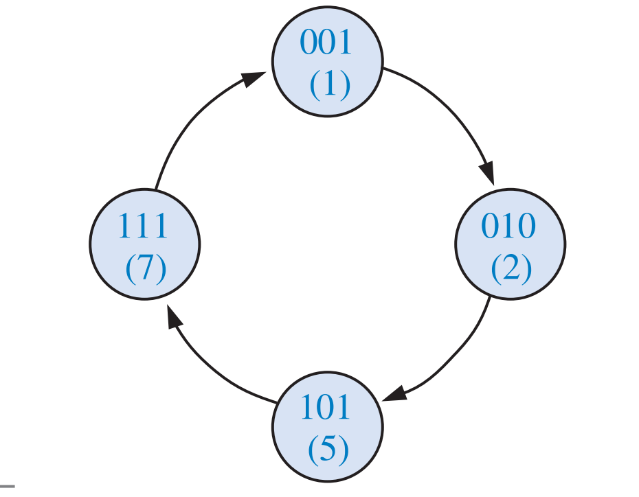
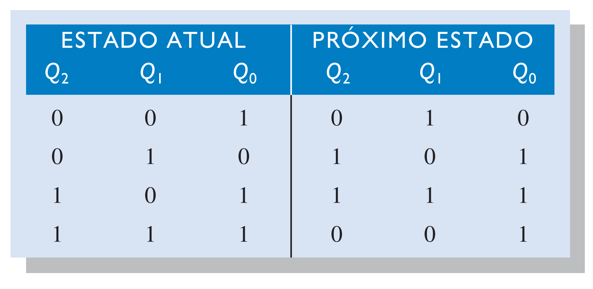
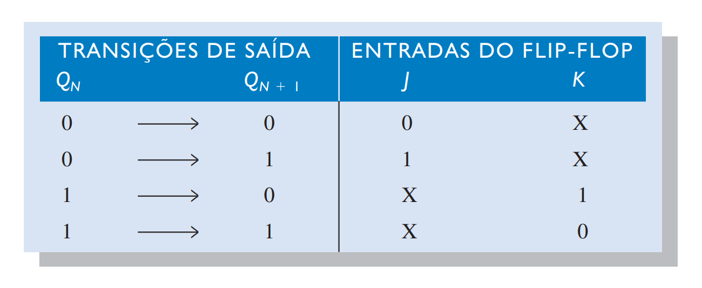
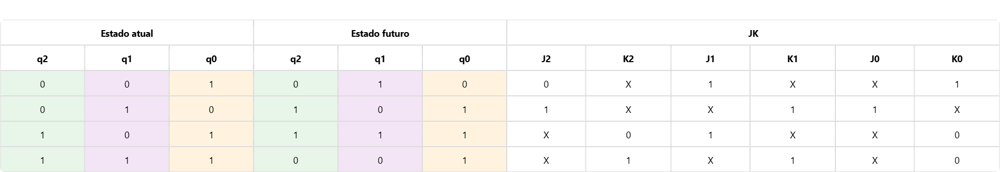
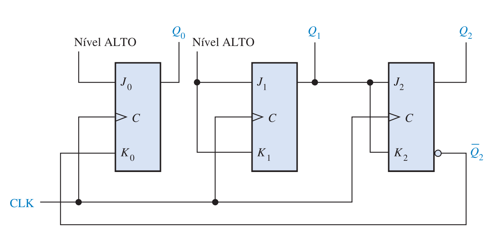

Realizar o diagrama de estados

Figura 1. Fonte: Floyd, 2007, pág. 468.
Criar a tabela de estados (ou tabela do próximo estado)

Tabela do próximo estado. Fonte: Floyd, 2007, pág. 468.
A tabela de transição para o flip-flop JK é repetida a seguir

Tabela de transição para um flip-flop JK. Fonte: Floyd, 2007, pág. 468.

Tabela do contador. Fonte: Autoria própria.
As entradas J e K são inseridas no mapa de Karnaugh do estado atual. Condições don't care podem ser colocadas nas células correspondentes aos estados inválidos, nesse exemplo: 001, 011, 100 e 110.
Do mapa de K obtêm-se as expressões para cada entrada J e K. As expressões obtidas dos mapas são as seguintes:
J₀ = 1, K₀ = Q̅₂
J₁ = 1, K₁ = 1
J₂ = 1, K₂ = Q₁
A implementação do contador é mostrada na figura

Figura 2. Implementação do contador. Fonte: Floyd, 2007, pág. 469.
FLOYD, Thomas L. Sistemas Digitais: Fundamentos e Aplicações. 9. ed. Porto Alegre: Bookman, 2007.
ISBN: 9788560031931